From West Alder Drive, the ridge keeps climbing until there's simply no more hill left to give — and that's where Lots 15 & 16 sit, protected forest at their back, Cain Lake close enough to walk to. One lot still wears its original cedar and moss. The other has already been cleared and readied for the work ahead.
Everything that matters about Lots 15 & 16, at a glance — each one proven in photos, documents, and detail further down the page.
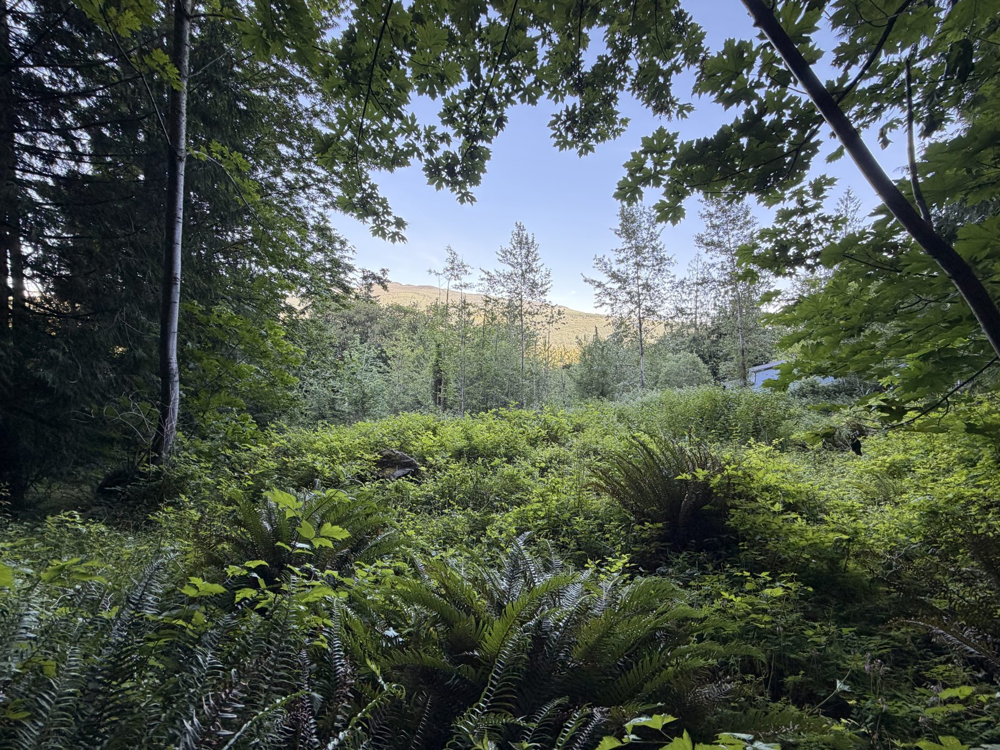
Protected forest borders the rear of both lots. Mature cedars still stand on Lot 15, and a privacy buffer lines Lot 16.
See the property ↓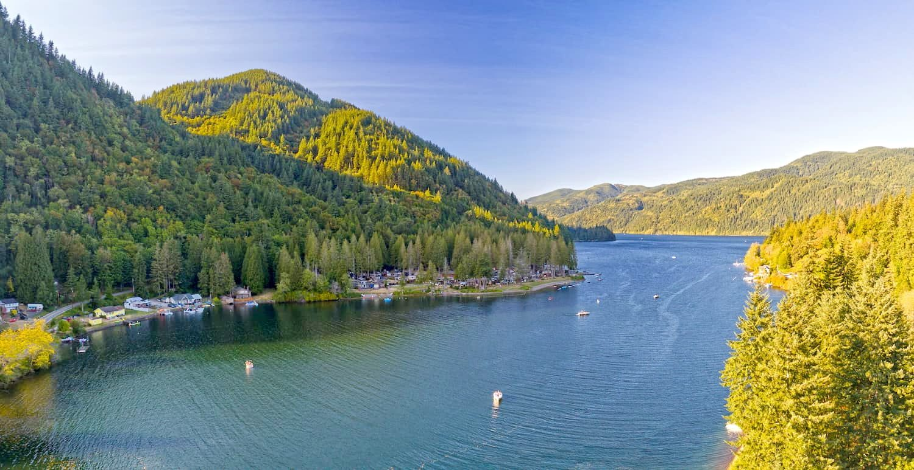
Lots 15 & 16 sit at what's widely regarded as the highest ground in the community, above the rooflines below.
See the property ↓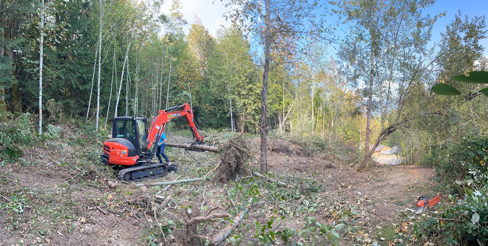
Cleared and prepared, with an existing septic design on file, community water available, and power at the road.
See the property ↓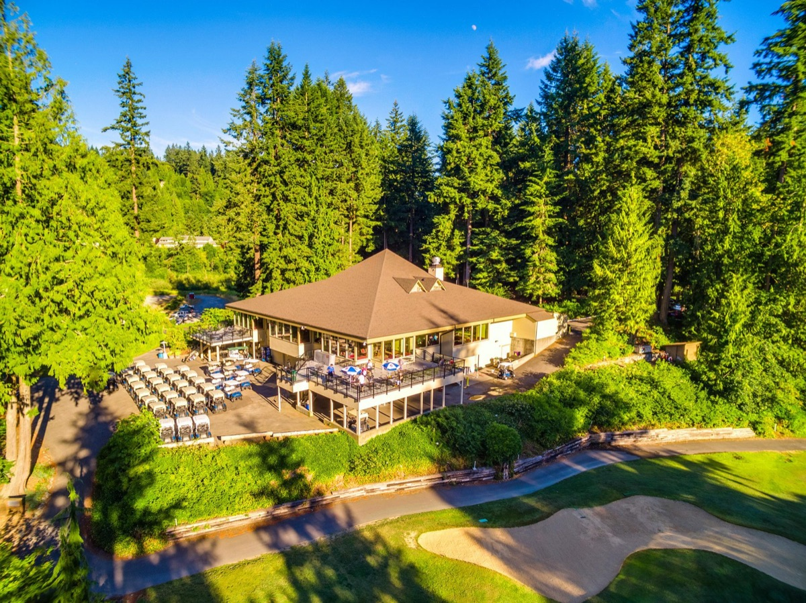
Glenhaven's own clubhouse and maintained roads, plus a community dock on Cain Lake, within walking distance.
See the community ↓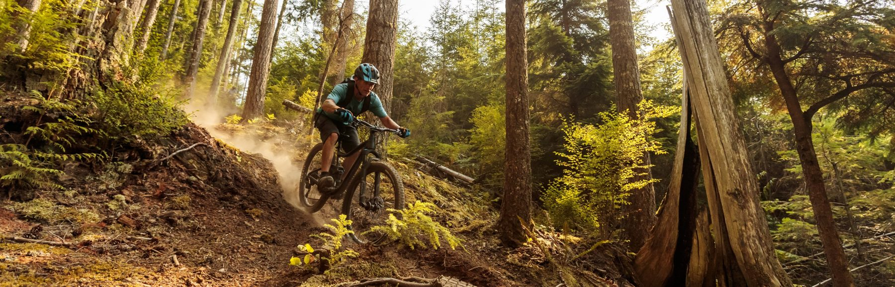
Cain Lake on foot, Lake Whatcom in six minutes, Galbraith's trail network in twenty, Mt. Baker on the horizon.
Explore the area ↓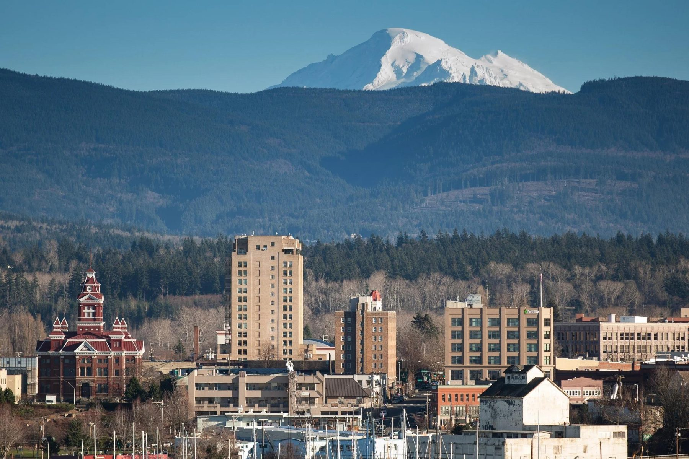
I-5 in about eight minutes, Bellingham in about twenty — the quiet up here doesn't cost you the convenience.
See why it holds value ↓Picture your first morning on the ridge. Coffee on a deck that doesn't exist yet, looking out over cedar canopy toward a tree line still holding fog. No neighbor's roofline in that view. No fence. Just the forest that borders your property, going nowhere.
Design the great room to catch the afternoon light coming off the ridge, or angle a second-story window toward Mount Baker on the horizon. Frame the kitchen around the cedars you choose to keep. Build a patio around the glacial boulder that's been sitting on this lot since long before Glenhaven had a name, and let it do the landscaping work you'd otherwise hire someone to fake.
In the evening, walk the trail behind the lots down to Cain Lake, or stay outside long after dark under a sky the streetlights haven't reached yet. This is the version of home that starts with land good enough to build the rest of your life around.
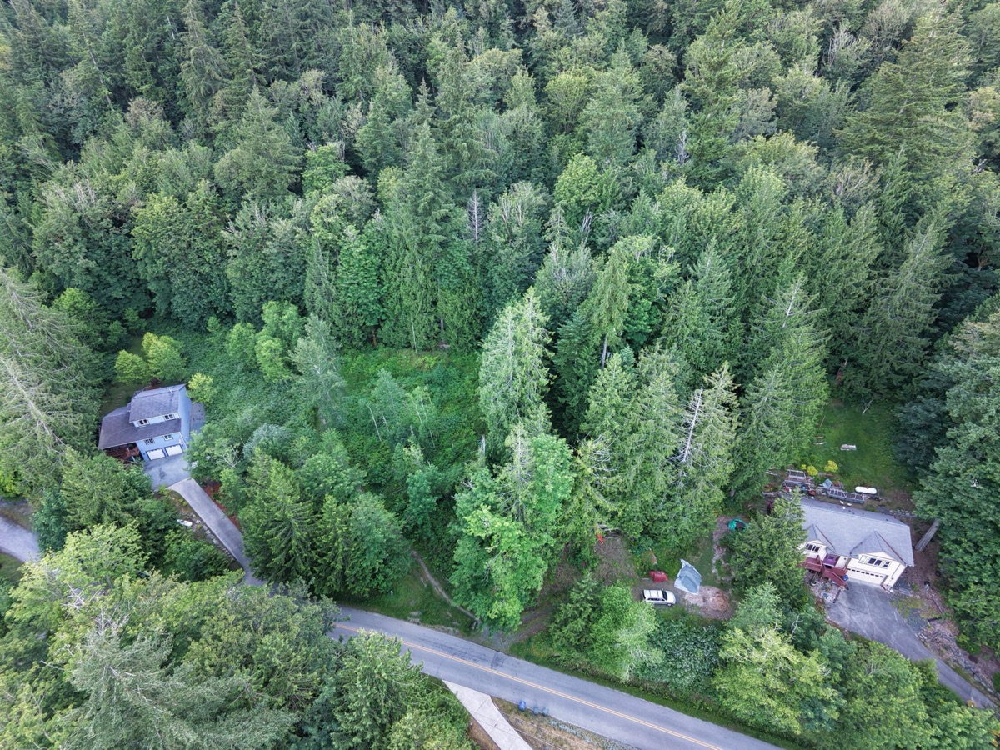
Life on this ridge moves at the pace of the seasons, not the commute. Mornings might start with a paddle across Lake Whatcom or a quiet walk down to Cain Lake before the rest of the county is awake. On clear days, Mount Baker holds the horizon like a permanent fixture. When you want a town, Bellingham is twenty minutes down the hill, and Fairhaven's brick storefronts and harbor are barely further than that.
Most listings say "close to trails." Here's the actual inventory — the destinations that matter most, and how long it takes to reach them.
Property photography and drone video throughout this page are owner-filmed. Area and lifestyle photography represent the destinations described.
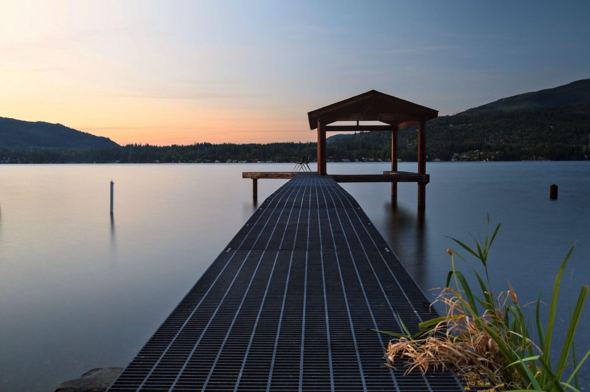
Glenhaven's own lake — swimming, kayaks, trout, and the community dock. The valley the property overlooks runs down toward its shore.
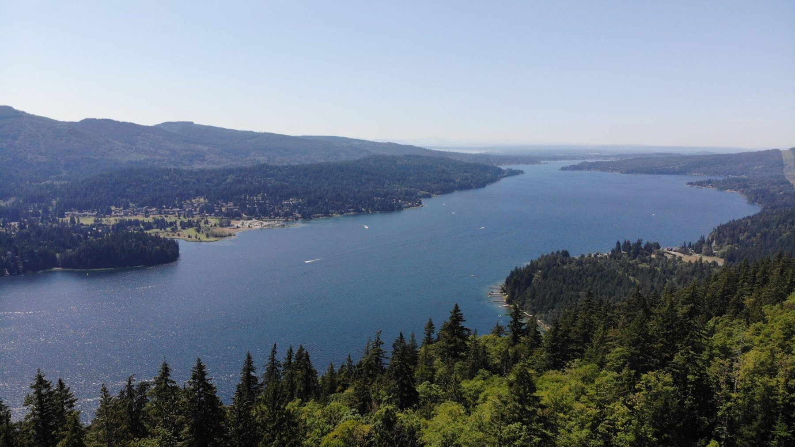
Ten miles of freshwater stretching from Bellingham into the hills — boating, fishing, and shoreline parks. Glenhaven sits just over the ridge from its south end.
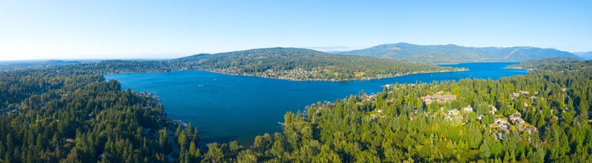
A quieter third lake in the same corner of the county — a shoreline community, fishing, and another reminder of how much water surrounds this ridge.
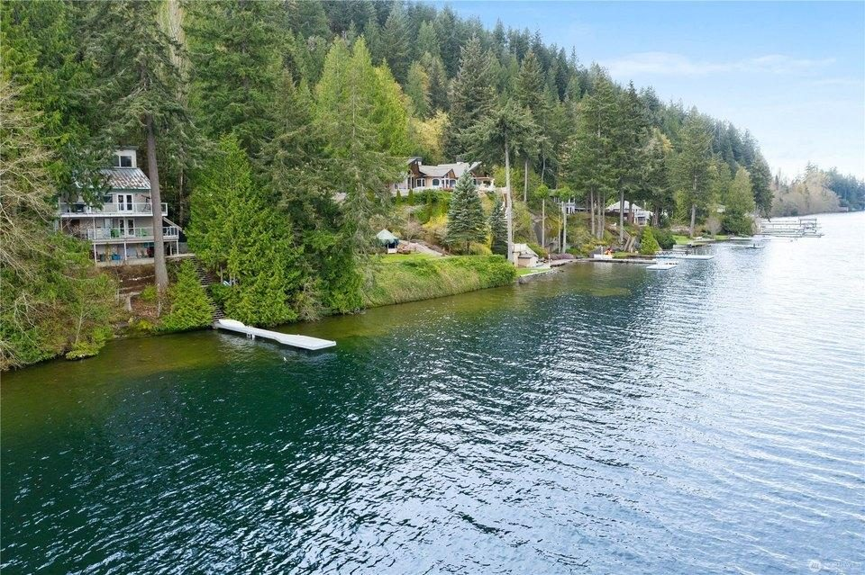
The master-planned community on Lake Whatcom — golf course, marina, beaches — where homes regularly sell from $700K into the millions. Proof this corner of the county carries serious value.
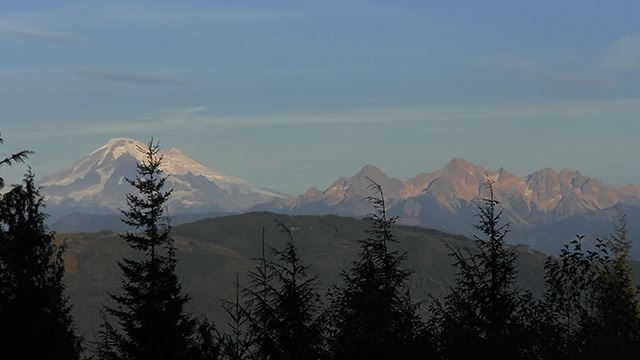
A 10,781-foot glaciated volcano — and the view potential from a future second story on these lots. Its ski area holds the world record for snowfall in a single season.
65+ miles of purpose-built mountain bike trail on the ridge between Lake Whatcom and Bellingham — one of the best-known riding networks in the country.
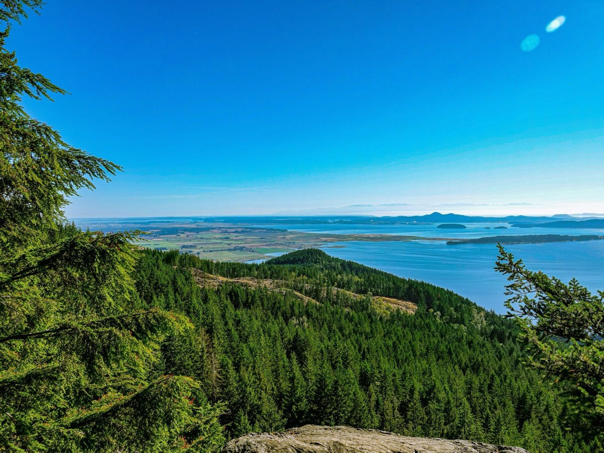
Washington's famous coast road, carved along the cliffs where the Cascades' foothills meet saltwater — oyster bars, viewpoints, and Oyster Dome's summit view of the bay and islands.
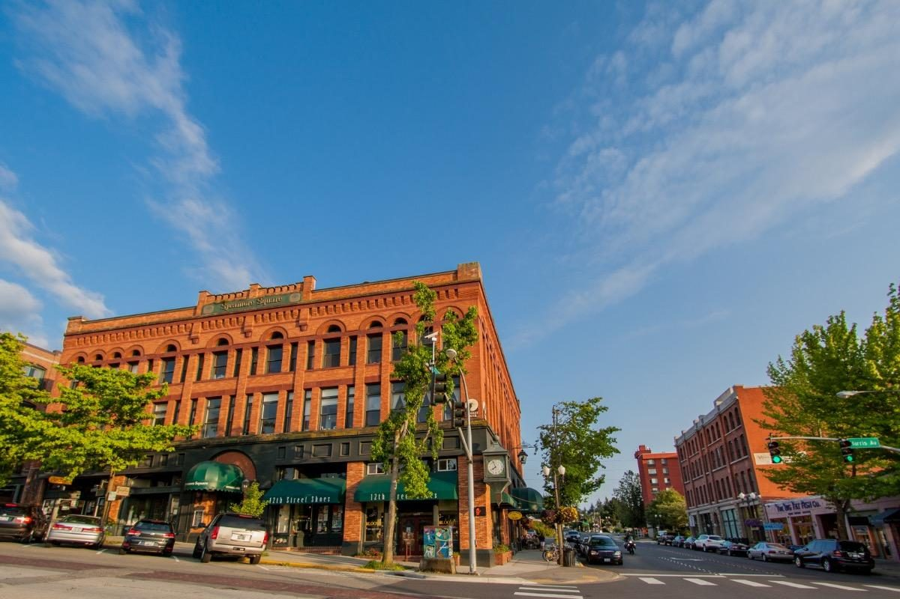
Bellingham's historic brick district on the bay — bookstores, restaurants, the village green, and the Alaska ferry terminal. The kind of neighborhood other towns try to build from scratch.
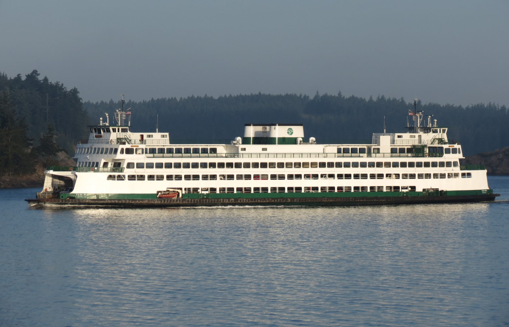
The gateway to the islands — a working marina town where Washington State Ferries depart for the San Juans all day. Boat owners: this is where yours lives.
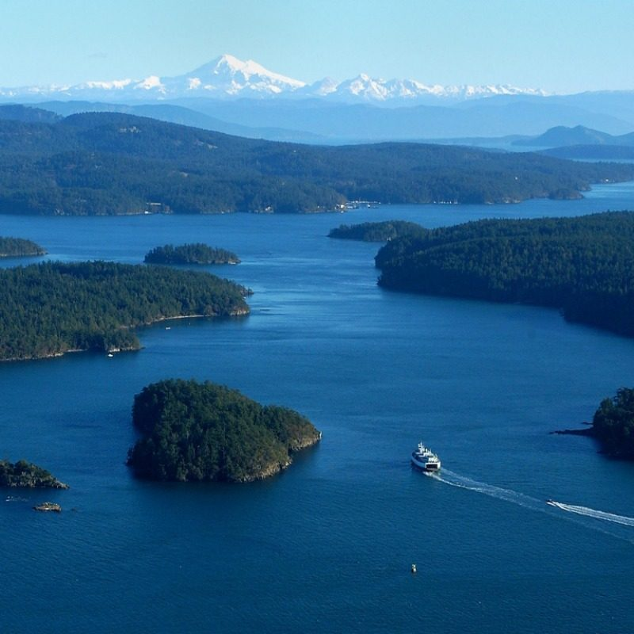
172 named islands in the rain shadow — orcas, harbors, farm stands, and some of the most protected sailing water in North America. A day trip from this ridge.
The city that anchors it all — about 100,000 people, Western Washington University, hospitals, and a food-and-outdoors culture that keeps landing on "best town" lists.
The detail that changes everything: this hilltop feels remote, but the freeway on-ramp is eight minutes away — and Bellingham International is thirty.
One of the world's most livable cities, close enough for dinner — the Peace Arch border crossing is under an hour away. YVR opens direct routes across Asia and Europe.
Ninety minutes south: the region's economic engine, pro sports, and Sea-Tac's global network. Close enough for a meeting or a flight, far enough that none of it follows you home.
Sudden Valley's golf-and-marina community is 15 minutes away, with homes from $700K into the millions. Established high-value residential life already exists in this exact corner of the county — this ridge sits beside it at land prices.
Protected forest at the property line. Galbraith's trail network at 20 minutes. The Chuckanuts and the saltwater at 25. A record-snowfall volcano on the horizon. None of it can be built over.
I-5 in 8 minutes. Two full-service towns in 20. Two international cities and two major airports within about 90 minutes, in opposite directions. Remote is a feeling here — not a logistics problem.
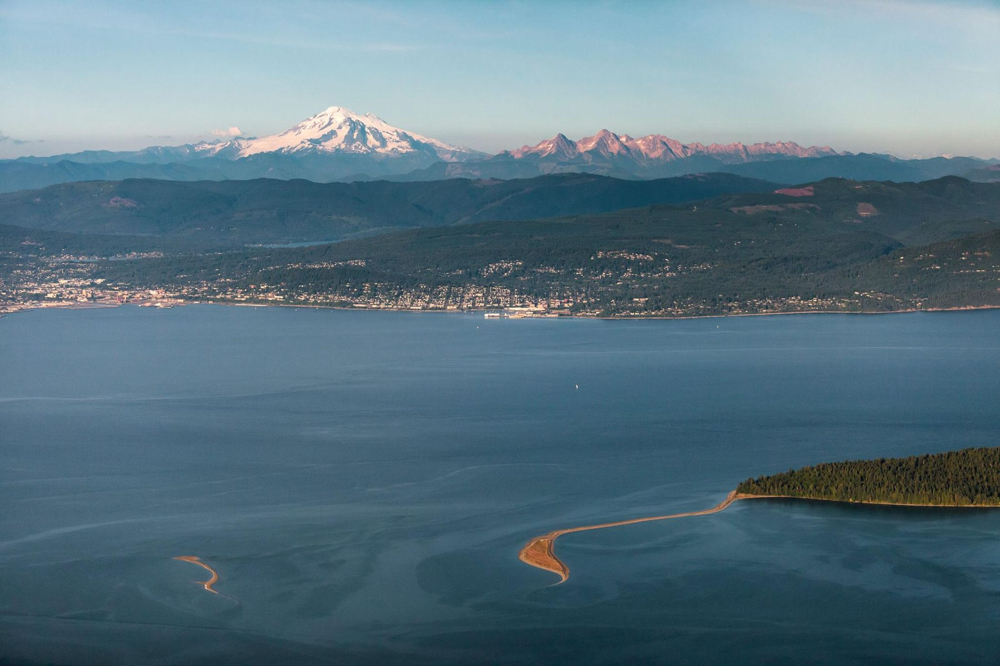
Some rural land purchases mean building a sense of community from nothing. Glenhaven already has it in place.
Glenhaven has its own clubhouse and maintained roads in place, real infrastructure around a homesite that still feels like the edge of the wild. A community dock sits on Cain Lake, within walking distance of the property.
The Alder Trail begins immediately behind the lots, leading into the forest that borders the property — a five-minute walk from your own driveway to a trailhead most homesites would need a car to reach.
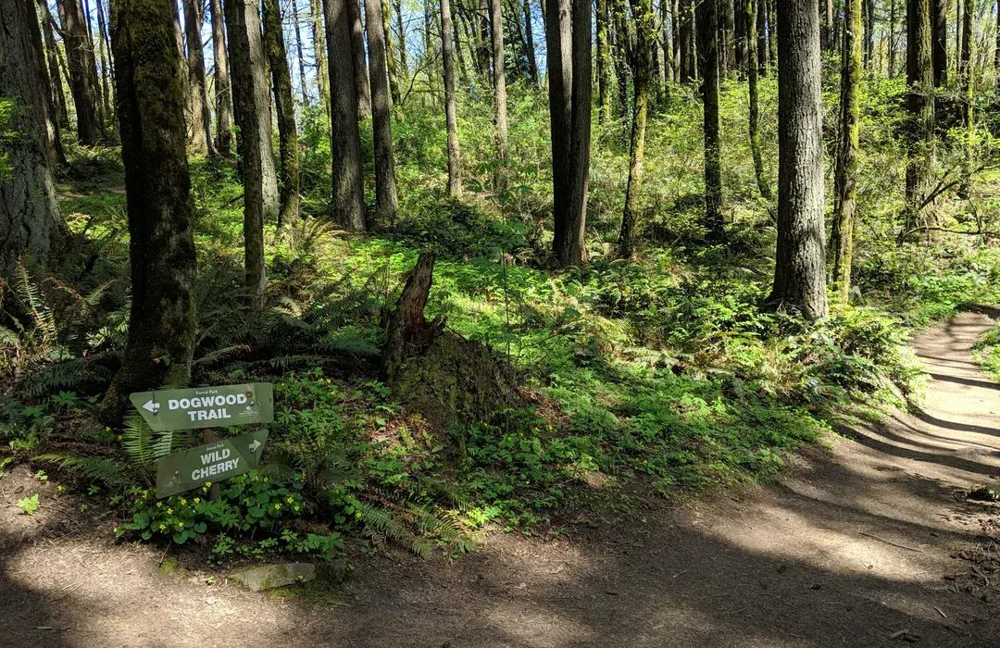
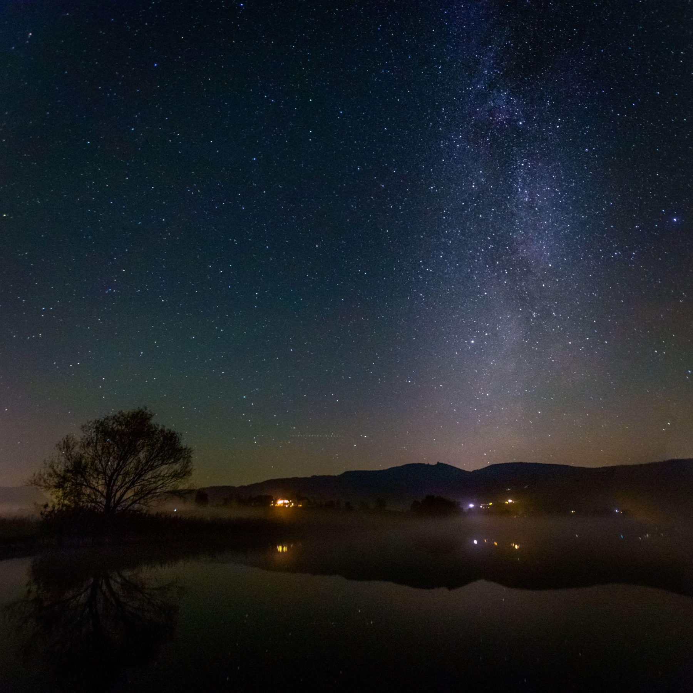
The annotated survey below marks the exact boundary of both lots — where the line runs, how the two parcels divide, and what borders them on every side.
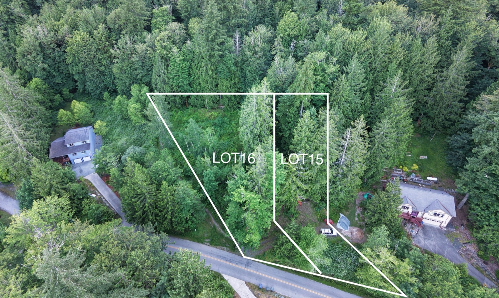
Already cleared and prepared for construction — the slow, expensive first chapter of a custom build, already written. An existing septic design is on file (design only — the drain field has not been installed). Design your home and go.
Standing western red cedars, moss, ferns, and the privacy only established timber provides — walked here on video by the owner. Keep it wild as your own greenbelt, or build within the trees.
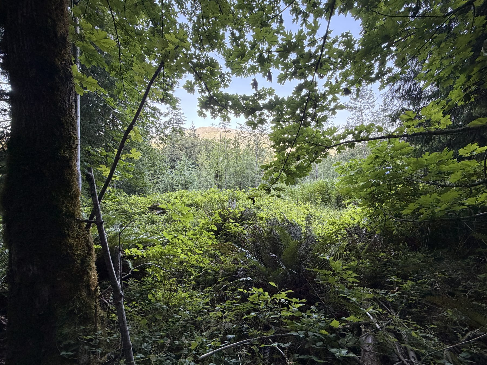
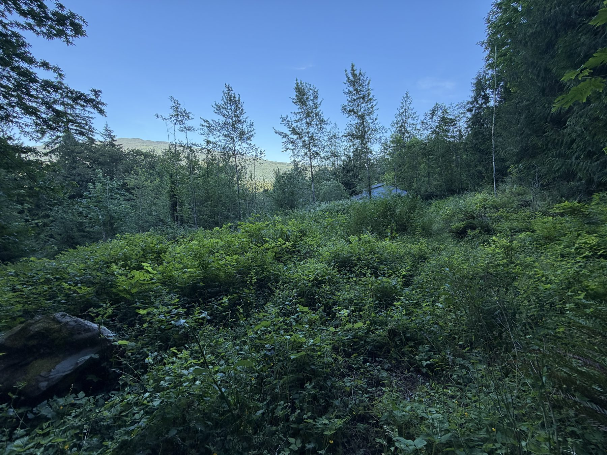
Walking the lots, June — owner photos. More photos and full drone footage available on request.
A massive boulder carried here by ice-age glaciers and set down roughly 15,000 years ago sits on the natural lot. Landscape architects pay to install stone like this. Yours came with the continent's receipt.
Glenhaven has other homesites from time to time, but none combine these things in a single purchase. Some of this is specific to Lots 15 & 16 versus their neighbors on the same ridge; some is true of Glenhaven as a whole and worth knowing before comparing this ridge to land anywhere else in the county.
Other Glenhaven parcels sit at varying points on the hillside. Lots 15 & 16 are widely regarded as the highest homesite in the community — an elevation advantage for a future build that isn't available to buy anywhere else in the neighborhood.
Most platted lots back up to another lot or a road. These back directly onto forest that is not part of any building lot — a rear boundary that stays a tree line instead of eventually becoming a neighbor's siding.
A typical single-lot purchase here is one condition: cleared or wooded, and nothing else. This purchase is both — Lot 16 already cleared and carrying an existing septic design, Lot 15 left natural with mature standing cedars. Build now, keep a private greenbelt next door, or both.
Some rural land purchases mean building a sense of community from nothing. Glenhaven already has its own clubhouse and maintained roads in place — real infrastructure around a homesite that still feels like the edge of the wild.
Cain Lake is walking distance from these lots; the Lake Whatcom boat launch is about six minutes by car. Few homesites anywhere put two separate lakes this close together.
I-5 is about eight minutes away, and Bellingham — roughly 100,000 people, a university, hospitals — is about twenty. Land with comparable elevation and privacy elsewhere in the county usually trades that quiet for a much longer drive. Here it doesn't.
| Dimension | Typical Glenhaven Lot | Lots 15 & 16 |
|---|---|---|
| Lot count & size | One lot; size varies by parcel | Two adjoining lots sold together — 26,148 SF combined (13,068 + 13,080) |
| Elevation | Varies by position on the hillside | Widely regarded as the highest homesite in the community |
| Rear boundary | Often another lot or the road | Protected forest that is not part of any building lot |
| Ground condition | Usually one condition — cleared, or wooded | Both: Lot 16 already cleared and prepared; Lot 15 left natural with mature cedars |
| Utilities | Buyer typically arranges independently | Community water available; power available at the road |
| Septic status | Typically requires a new septic design before permitting | Existing septic design already on file for Lot 16 (design only — not installed) |
| Distinctive natural feature | None typically noted | A glacial erratic boulder, roughly 15,000 years old, on the natural lot |
| Distance to Cain Lake | Depends on the specific lot | Walking distance from the lots themselves |
| Privacy buffer control | Depends on what a neighbor eventually builds next door | Buyer holds both the build-ready lot and the natural lot as its own buffer |
A fact-only comparison. No two lots in Glenhaven are identical, so treat "typical single lot" as a reasonable baseline rather than any one specific listing. Buyer to verify all figures independently.
The essentials, at a glance — before the documents, before the site visit. Full documentation is available in the information package below.
Figures below are owner-reported; buyers are encouraged to verify independently.
The two scarcest words in land are above and behind. Here, both are already spoken for — by elevation and by law.
Architects, builders, and lenders all need the plat map, site plan, and septic design before they can give real numbers. Request the seven-document package and start those conversations sooner.
Request the full information package and receive it by email — ready to forward to your architect, builder, or lender.
Request the Info Package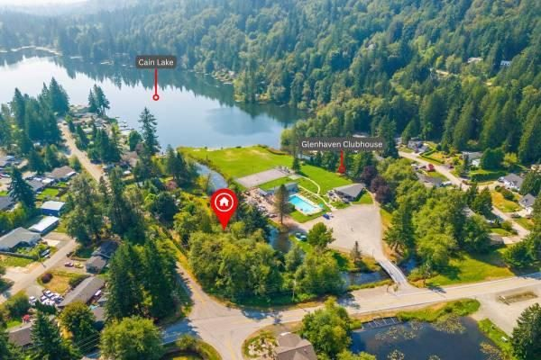
| Alder Trail / protected forest | property line |
| Cain Lake | walking distance |
| Lake Whatcom boat launch | ≈ 6 min |
| I-5 (Alger exit) | ≈ 8 min |
| Lake Samish | ≈ 10 min |
| Sudden Valley | ≈ 15 min |
| Bellingham | ≈ 20 min |
| Galbraith Mountain trails | ≈ 20 min |
| Fairhaven · Chuckanut Drive | ≈ 25–30 min |
| Bellingham International Airport | ≈ 30 min |
| Anacortes ferries (San Juans) | ≈ 40 min |
| Canadian border (Blaine) | ≈ 45 min |
| Mt. Baker Ski Area | ≈ 90 min |
| Seattle · Vancouver, BC | ≈ 90 min |
Times approximate, normal traffic. Buyer to verify all information independently.
Lots 15 & 16 are offered together, as they are — the drone footage is real, the quiet is real, and the view works better in person than on a screen. There's no separate sales office here, so emailing Jimmy directly is the fastest way to get current answers.
Email JimmyJimmy@roughandreadyllc.com